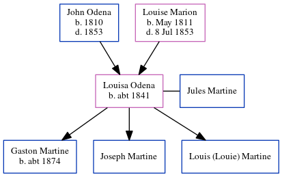

Louisa Marion Martine (née Odena) c1841 -
[ Home ] | [ Calendar ] | [ Surnames Index ] | [ Census Index ] | [ Family History ]The child of John Odena and Louise Marion, Louisa Odena, the three times great-aunt of Michele Copp (née Phillips), was born in South Carolina c. 18411,2,3, and was orphaned in 1853 by the death of both parents in that year her.
She had 3 children with Jules Martine: Gaston, Joseph and Louis (Louie)During her life, she was living in St Michael and St Phillip, Charleston, South Carolina in 18501; in Atlanta Ward 2, Fulton, Georgia in 18602; and in Atlanta, Fulton, Georgia, USA in 18803.
Parents
- John Hypolite was born in 1810
- Louise Marie was born in May 1811
Children
- Gaston was born c. 1874
Citations
- 1850 United States Federal Census Online publication - Provo, UT, USA: The Generations Network, Inc., 2005.Original data - United States of America, Bureau of the Census. Seventh Census of the United States, 1850. Washington, D.C.: National Archives and Records Administration, 1850. M432,
- 1860 United States Federal Census Online publication - Provo, UT, USA: The Generations Network, Inc., 2004.Original data - United States of America, Bureau of the Census. Eighth Census of the United States, 1860. Washington, D.C.: National Archives and Records Administration, 1860. M653, 1
- 1880 United States Federal Census Online publication - Provo, UT, USA: The Generations Network, Inc., 2005. 1880 U.S. Census Index provided by The Church of Jesus Christ of Latter-day Saints © Copyright 1999 Intellectual Reserve, Inc. All rights reserved. All use is subject to the limite
Family Tree
Generated by ged2site. Last updated on Jun 6, 2024